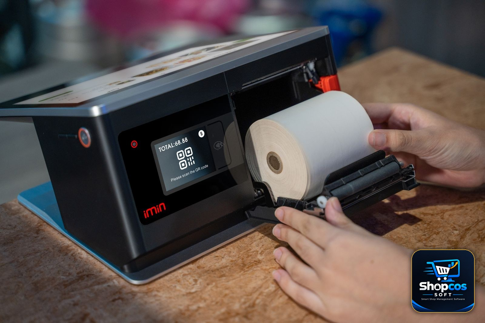
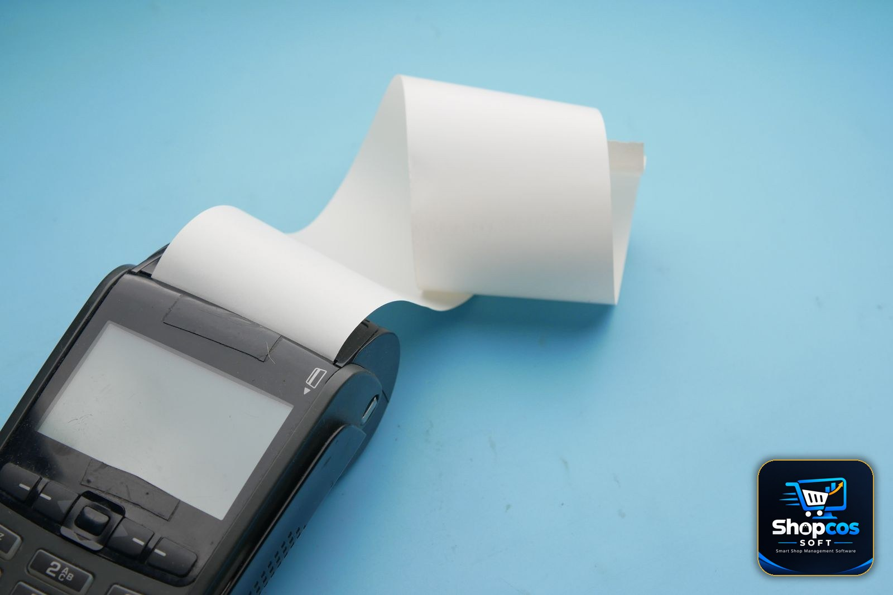

Every bill your shop prints is a small piece of paper doing three jobs at once: it is the customer's proof, your record, and — when the customer reads it on the way home — your shop's reputation. And yet the printer that makes it is usually the last thing a shopkeeper thinks about. The software gets compared for weeks, the printer gets bought in ten minutes from the nearest computer shop, on whatever the shopkeeper says is "best". Then the bills start coming out wrong. The total is cut off at the right edge. The item names wrap onto two lines and the bill is a foot long. The print is so faint the customer cannot read it by evening. The roll runs out in the middle of the rush, and the spare roll is the wrong width.
Almost all of that comes down to two numbers — 58mm and 80mm — and a handful of settings most shops never touch. This guide explains both in plain language: what the widths actually mean on a real bill, which one fits your kind of shop, what each bill honestly costs you in paper, which printer specs are worth paying for, and the exact software settings that make the difference between a clean bill and a mess. No jargon, no brand wars — just the decisions a shopkeeper in Pakistan has to make once, and then live with for years.
What 58mm and 80mm Actually Mean
A thermal printer has no ink. It prints by heating tiny dots onto special heat-sensitive paper, which turns black where the heat touches it. That is why the print is fast and silent, why there is never an ink cartridge to buy, and why a bill left on a sunny dashboard fades to nothing. The two numbers — 58mm and 80mm — are simply the width of the paper roll the printer takes.
- 58mm paper is actually about 57mm of printable width. The printer itself is small — roughly the size of a lunchbox — and it fits on the tightest counter, in a thela-sized space, or next to a mobile-phone repair desk. Rolls are small too, usually 40mm or 50mm in diameter, holding about 20–25 metres of paper.
- 80mm paper is about 79–80mm of printable width — roughly 40% wider. The printer is bigger, about the size of a shoebox, and its rolls are fatter, usually 80mm in diameter, holding about 50–60 metres of paper. That is the standard you see at almost every supermarket, pharmacy and restaurant counter in Pakistan.
The width is not a quality grade. A good 58mm printer prints just as sharply as a good 80mm one. The question is never "which is better" — it is "which one fits what your bills need to say". And that is decided by the next section.
The Real Difference on the Bill: What Fits, What Gets Cut
Thermal printers print in a fixed-width font, so the width of the paper decides how many characters fit on one line. At the standard print size, an 80mm bill fits about 42–48 characters per line; a 58mm bill fits about 30–32. That gap of a dozen characters is where most printing problems live.
Take a normal kiryana item: "Dalda Cooking Oil 5 Litre — Rs 3,450". That is 36 characters. On 80mm paper it sits on one clean line with the price at the right edge. On 58mm paper it does not fit — so the printer either wraps it onto a second line, making every bill longer, or, if the software is set up wrong, it chops off the price entirely and the customer gets a bill with no total. Now multiply that by twenty items, and the 58mm bill is either twice as long or missing the one number the customer actually checks.
Here is what each width handles comfortably:
| On the bill | 58mm — fits? | 80mm — fits? |
|---|---|---|
| Shop name + phone number | Yes, one line | Yes, one line |
| Short item names ("Atta 10kg") | Yes | Yes |
| Long item names with brand + size | Wraps to 2 lines | Yes, one line |
| Item + quantity + rate + amount in columns | No — too cramped | Yes |
| Urdu or Roman Urdu item names | Often wraps | Usually fits |
| QR code / FBR invoice code | Small, sometimes unreadable | Yes, scannable size |
| Shop logo at the top | Tiny | Clear |
| Thank-you note + return policy footer | Yes, wrapped | Yes |
The rule of thumb is simple: if your bills are mostly short items with short names — a paan shop, a mobile-load shop, a small tea stall — 58mm does the job. If your bills carry full product names with brands and sizes, quantities, rates and a QR code, 80mm is not a luxury, it is the paper the bill needs.

Which Width Fits Your Shop?
Match the paper to the shop, not to the price tag. The printer is a one-time purchase; the paper is a cost you pay every month for years. Here is the honest guide by shop type:
- Kiryana / general store (small counter): 80mm. Your items have brands, sizes and weights — "Shan Biryani Masala 50g", "National Ketchup 800g" — and your customers check every line. The 58mm bill will wrap constantly.
- Pharmacy / medical store: 80mm. Medicine names are long, and a bill where the medicine name wraps onto the price line is a bill a customer cannot trust. Many medical stores also print the doctor's name and a return note.
- Restaurant / café / fast food: 80mm. Kitchen tickets (KOTs) and customer bills both carry long item names, modifiers ("extra cheese", "no onion") and table numbers. Narrow paper turns a 12-item order into a scroll.
- Clothing / garments: 80mm. Size, colour and price need columns, and the exchange policy printed at the bottom matters — that is the line that stops arguments later.
- Mobile shop / load & accessories: 58mm is fine. Bills are short — a recharge, a cover, a cable — and the counter is usually tiny. Many mobile shops use a small Bluetooth 58mm printer with a phone.
- Small thela, tea stall, juice corner: 58mm. Two or three items per bill, short names, and the printer needs to be portable and cheap.
- Wholesale / distributor: 80mm, and consider A4 invoices for big parties. A wholesale bill with 40 items, credit terms and a balance carried forward does not belong on narrow paper at all.
If you are unsure, buy the 80mm printer. It costs a few thousand rupees more once, and it removes an entire category of problems — wrapped lines, cut-off totals, unreadable QR codes — for the life of the machine. The only shops that should actively choose 58mm are the ones where the counter genuinely has no space, or where the printer must travel with the seller.
What a Bill Actually Costs: The Paper Maths
Nobody budgets for paper, which is exactly why it surprises people. The printer is a one-time cost; the paper is a forever cost, and it is bigger than it looks. Here is the maths with typical Pakistani market prices — paper rolls at about Rs 130 for 58mm and Rs 220 for 80mm, and a typical bill about 15 centimetres long:
| 58mm roll | 80mm roll | |
|---|---|---|
| Paper per roll | ~20–25 metres | ~50–60 metres |
| Bills per roll (typical) | ~140 | ~300 |
| Cost per bill | ~Rs 0.90 | ~Rs 0.70 |
| Rolls a month (100 bills/day) | ~22 rolls | ~10 rolls |
| Paper cost a month | ~Rs 2,900 | ~Rs 2,200 |
| Paper cost a year | ~Rs 34,800 | ~Rs 26,400 |
The number to remember: the narrower paper is not the cheaper paper. At 100 bills a day, 58mm paper costs roughly Rs 700 more every month — about Rs 8,400 a year — than 80mm, because each small roll holds less than half as many bills. The 80mm printer costs more on day one and less every day after.
Two things move these numbers. First, bill length: a bill with a long footer, a big logo and a return policy can be 25 centimetres instead of 15, and that cuts the bills-per-roll by a third — keep your footer short and your logo small. Second, roll changes: a 58mm roll runs out more than twice as often, which means twice as many mid-rush interruptions while someone hunts for the spare roll. That interruption has a cost too, even if it never appears in a ledger.
Buying the Printer: The 7 Specs That Matter
Walk into any computer market in Lahore, Karachi or Rawalpindi and you will find thermal printers from Rs 8,000 to Rs 40,000 that all look like the same black box. The box is not the product — the specs inside it are. Check these seven before you pay:
- Print speed. Measured in millimetres per second. A good counter printer does 200–300 mm/s — a bill prints in about a second. A slow one does 90–150 mm/s, and the customer waits while the paper creeps out. The SpeedX SP90A, the model we recommend for shopcos soft, prints at up to 220 mm/s. Anything under 150 mm/s will feel slow on a busy evening.
- Print resolution — 203 dpi. This is the standard for receipts, and it is enough for text, barcodes and QR codes. Do not pay extra for higher dpi on a receipt printer; the paper cannot show the difference. Do check that barcodes print dark and clean — a faded barcode is a barcode your scanner will not read.
- Auto cutter. The blade that cuts the bill off cleanly after printing. A good cutter is rated for around a million cuts; a cheap one starts tearing after a few months, and then every bill comes out ragged or half-attached. If the printer you are considering has a manual tear bar instead of a cutter, it is a hobby printer, not a counter printer.
- Connectivity. USB is the reliable default for a counter PC — plug it in and it works. Bluetooth is useful if the printer sits away from the PC or pairs with a phone. Wi-Fi is handy for a second counter or a kitchen printer. A printer with USB + Bluetooth, like the SP90A, covers both a PC counter and a phone, and that flexibility is worth paying for.
- Paper roll diameter. Check the maximum roll size the printer accepts — usually 80mm diameter for 80mm printers, 50mm for 58mm ones. A printer that only takes small rolls means more roll changes and more expensive paper per bill, which quietly erases whatever you saved on the printer.
- ESC/POS compatibility. This is the command language almost every billing software speaks to thermal printers. If a printer does not support ESC/POS, your software may not be able to cut the paper, open the cash drawer, or print a logo. Ask the seller one question: "Kya ye ESC/POS support karta hai?" If they cannot answer, buy elsewhere.
- Brand and support. In Pakistan, XPrinter, Epson and Bixolon are the safe names, with parts and repair available in the big markets. A typical 58mm printer costs Rs 9,000–16,000; a good 80mm one costs Rs 16,000–35,000. Below Rs 8,000 you are usually buying a printer with a weak cutter, a slow head and no one to repair it. Keep the shop's card — a printer that dies during Eid rush is a problem you solve with a phone number, not a warranty form.
One more thing to check in the box: the power adapter. Some cheap printers ship with a weak adapter that overheats and resets the printer mid-bill. If the printer restarts itself, the adapter is the first suspect, not the software.
The Paper Problem: Why Bills Fade (and How to Stop It)
Thermal paper has one weakness every shopkeeper discovers too late: the print fades. Heat, sunlight and time all erase it. A bill left on a sunny counter is unreadable in weeks; a roll stored next to a stove or above a UPS can go grey before it is even loaded. Customers who keep bills for warranties and returns come back with blank paper and an argument you cannot win.
Three habits fix most of it. First, buy decent paper: genuine thermal rolls print dark and stay dark far longer than the cheapest rolls in the market, and the price difference is a few rupees per roll. Ask for BPA-free paper if you stock it — it is the same price range now, and customers notice. Second, store rolls the right way: in a cool, dry drawer, away from sunlight, heat and the UPS. Never keep a spare roll on top of the printer, where its own heat ages the paper. Third, keep the print density right in your software settings — a bill printed too light fades faster, and a bill printed too dark wastes the print head. The middle setting is usually correct.
And for the bills that must last — warranties, advance payments, udhar settlements — do not rely on thermal paper at all. Send the customer the bill on WhatsApp as well, or print a second copy on plain paper. A WhatsApp bill never fades, and it is already on the customer's phone when they come back. Our guide on how to send a bill on WhatsApp shows how to make that a one-tap habit at the counter.

The Software Settings That Decide Whether Your Bill Prints Right
Here is the secret most printer sellers will not tell you: half of all "printer problems" are software settings, not the printer. A perfectly good 80mm printer will print a 58mm bill if the software thinks it is talking to a 58mm printer — and then the total lands off the edge of the paper. Before you blame the machine, check these five settings in your billing software and in the Windows printer driver:
- Paper width — set it in both places. In Windows, open the printer's properties and set the paper size to 80mm (or 58mm) to match the roll actually loaded. Then set the same width inside your billing software's print settings. If the two disagree, the bill will be cut off or printed too small. This single mismatch causes more "printer kharab hai" complaints than any real fault.
- Font size and character count. Most software lets you pick small, medium or large bill text. Large text is easier for older customers to read, but it fits fewer characters per line — on 58mm paper, large text can cut an item name in half. Test one bill at each size and pick the largest size that still fits your longest item name on one line.
- Margins and logo size. A logo printed too wide eats the top of the bill and pushes everything down; a logo printed at the right width looks professional. Keep the logo under half the paper width, and leave a small top margin so the first line is not cut off by the cutter.
- Header and footer text. This is where the shop name, phone number, address and thank-you note live. Keep it short: shop name, one phone number, and one line for returns or timing. Every extra line is paper you pay for on every bill, and a footer longer than the bill itself is a joke the customer reads once and ignores forever.
- Cash drawer and cutter commands. The drawer kick and the auto-cut are commands the software sends to the printer — they are not automatic. If the drawer does not pop open after a cash bill, or the bill does not cut, the setting is off in the software, not broken in the printer. Check the "open drawer after cash sale" and "cut paper after print" boxes before calling a technician.
After changing any of these, print a test bill and read it like a customer would: is the total fully visible, is every item on one line, is the phone number readable, does the bill cut cleanly? That thirty-second test saves a day of wrong bills.
When Printing Goes Wrong: Fix It in 5 Minutes
Keep this table taped inside the counter drawer. It covers the faults that make up nearly every thermal printer complaint in a Pakistani shop:
| What you see | What it usually is | The fix |
|---|---|---|
| Bill comes out blank | Paper loaded upside down — thermal side facing the wrong way | Flip the roll over and reload it; scratch the paper with a nail — the thermal side marks black |
| Print is faint or patchy | Old or cheap paper, low print density, or a dirty print head | Try a fresh roll; raise the density one step in settings; clean the head with a soft cloth and a little spirit |
| Total cut off at the right edge | Software paper width set wider than the roll loaded | Set the width in Windows and in the billing software to match the roll — 58mm or 80mm |
| Bill prints too small, lots of empty space | Software set to 58mm while an 80mm roll is loaded | Same fix in reverse — match the setting to the roll |
| Printer not found / will not print | USB cable loose, wrong port, or driver issue | Unplug and replug the USB, try another port, restart the software; reinstall the driver only if that fails |
| Paper jams or tears inside | A torn piece stuck in the feed, or a bent roll core | Open the cover, remove every scrap of paper, reload a fresh roll straight — never force it |
| Printer restarts mid-bill | Weak power adapter or loose power plug | Use the original adapter, push the plug in firmly, and keep the printer off the same strip as the UPS if it shares one |
If none of these fix it, the print head itself may be worn out — after a few hundred thousand bills, the heating dots die one by one and lines start missing. At that point the honest answer is a new printer, not another repair. A head replacement usually costs more than the printer is worth.
How shopcos soft Handles Thermal Printing
We built shopcos soft around the counter, not around a demo screen — so the printer was part of the design from the start, not an afterthought:
- Both widths, properly. 80mm and 58mm are both supported, with the paper width set once in Settings and remembered. Bills are laid out for the width you choose — item names, columns and totals fit, instead of being squeezed and cut off.
- Printers we have tested. The SpeedX SP90A (up to 220 mm/s, USB + Bluetooth + Wi-Fi) is our recommended counter printer, and XPrinter, Epson and Bixolon thermal printers work out of the box with the standard ESC/POS driver. If your printer speaks ESC/POS, shopcos soft speaks to it.
- Six bill designs. Pick the layout that fits your paper — compact for 58mm, full-column for 80mm — with your shop name, logo, phone number and footer on every bill. The bill image can also go straight to the customer on WhatsApp, so a faded paper bill is never the only copy.
- Cash drawer and cutter. The drawer opens on cash bills and the paper cuts after every print, automatically — no settings hunt, no extra clicks at the counter.
- Offline, always. Load shedding does not stop printing. The bill prints from your own PC with no internet at all, and the sale is recorded even if the power goes out mid-print — reprint it from Recent Bills when the lights come back.
Try it on your own counter for a week, with your own printer and your own paper, and judge it on your busiest evening. That is the test a billing setup has to pass, and it is why we offer a 7-day FREE trial with plans starting at Rs 25,000, one-time. Questions first? Message us on WhatsApp at 0326 4025618 — Urdu mein baat ho jayegi.
The Bottom Line
The printer is the smallest purchase on your counter and the one you will touch most. Get the width right — 80mm for most shops, 58mm only where the counter or the bill is genuinely small — and remember that the wider paper is usually the cheaper paper over a year. Check the seven specs before you pay, keep the paper away from heat and sunlight, and set the paper width in your software to match the roll you actually loaded. Those three decisions prevent nearly every printing problem a shop ever has.
And when something does go wrong, do not start by buying a new printer. Check the paper direction, the width setting and the density first — five minutes with this guide's table fixes most faults for free. The printer is a tool, not a mystery. Buy it once, set it up right, and it will print ten thousand clean bills without asking for anything except a fresh roll. For the full cost of the counter around it — PC, scanner, drawer and UPS together — our billing machine price guide prices every piece in rupees, and our POS software checklist covers the ten things to verify before you download anything. The bill is the last thing your customer touches before they leave. Make it worth reading.
Photo credits: A modern point of sale system setup in a café photo by Doğan Alpaslan Demir · Hands setting up a thermal roll in a point-of-sale touchscreen device photo by iMin Technology · A point of sale terminal with thermal paper roll photo by Towfiqu barbhuiya — all via Pexels.